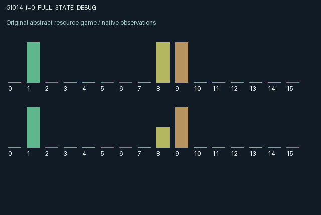

GI014 / LEGACY_ARRAY
astra-d2-00014 — Persistent signatures, complementary work, and unilateral exit
2 agents5 actions16 observation columns32 original horizonRuntime: PASS
Release verification episode
Untrained uniform legal actions. Actual JAX state sampled along the full original episode; full-state debug camera. No human performance or learning claim.

Run this game
crucibles play --game 14
Start Python locally, then open the address printed by the terminal. Installation, multiplayer, takeover and keyboard controls →
Objective, rewards & ending
Exact task contract
{
"objective": "Accumulate original per-agent rewards under the interaction rules in mechanism.md.",
"natural_termination": "No early terminal; original t >= 32 horizon.",
"exact_transition_and_reward_source": "def raw_step(self, key, state, actions):\n signing = (actions == 1) | (actions == 2)\n signatures = jnp.where(signing, actions, state[\"signature\"])\n signatures = jnp.where(actions == 4, 0, signatures).astype(jnp.int32)\n active = state[\"active\"] > 0\n launch = (\n jnp.logical_not(active)\n & jnp.all(signatures > 0)\n & (signatures[0] == signatures[1])\n )\n required = 2 + (state[\"active\"] != state[\"skill\"]).astype(jnp.int32)\n working = active & (actions == 3) & (state[\"effort\"] < required)\n progress = state[\"effort\"] + working.astype(jnp.int32)\n ready = active & jnp.all(progress >= required)\n withdrawn = active & jnp.any(actions == 4)\n expired = active & (state[\"age\"] + 1 >= 8) & jnp.logical_not(ready)\n completed = ready & jnp.logical_not(withdrawn)\n ended = completed | withdrawn | expired\n project_value = jnp.where(\n state[\"preference\"] == state[\"active\"], 0.65, 0.25\n ).astype(jnp.float32)\n rewards = (\n state[\"pending_payout\"]\n - 0.07 * working.astype(jnp.float32)\n - 0.01 * signing.astype(jnp.float32)\n ).astype(jnp.float32)\n next_state = {\n \"t\": state[\"t\"] + jnp.array(1, dtype=jnp.int32),\n \"signature\": jnp.where(\n launch, jnp.zeros((2,), dtype=jnp.int32), signatures\n ),\n \"active\": jnp.where(\n ended, 0, jnp.where(launch, signatures[0], state[\"active\"])\n ).astype(jnp.int32),\n \"effort\": jnp.where(\n launch | ended, jnp.zeros((2,), dtype=jnp.int32), progress\n ),\n \"age\": jnp.where(\n launch | ended, 0, jnp.where(active, state[\"age\"] + 1, 0)\n ).astype(jnp.int32),\n \"preference\": state[\"preference\"],\n \"skill\": state[\"skill\"],\n \"pending_payout\": jnp.where(\n completed, project_value, jnp.zeros((2,), dtype=jnp.float32)\n ),\n \"resolution\": jnp.where(\n withdrawn, 2, jnp.where(completed, 1, jnp.where(expired, 3, 0))\n ).astype(jnp.int32),\n }\n done_all = next_state[\"t\"] >= 32\n dones = jnp.full((2,), done_all, dtype=jnp.bool_)\n info = {\n \"done_all\": done_all,\n \"legal_mask\": self.legal_actions(next_state),\n }\n return self.observe(next_state), next_state, rewards, dones, info"
}Declared per-step reward bounds: -1.0 to 1.0. Observability: source_defined.
Rules
Original mechanism document (historical status wording retained)
# astra-d2-00014 — Persistent signatures, complementary work, and unilateral exit Status: authored source only. Isolated validation and duplicate/mechanism review are pending. ## Causal transition The agents can agree to produce either of two project types. Actions are 0 wait, 1 sign for type 1, 2 sign for type 2, 3 perform work, and 4 retract one's signature and withdraw from the active project. Signatures persist until replaced, retracted, or consumed by a launch. A project launches only while inactive and when both updated signatures agree. New signatures may also be prepared during an existing project for a later agreement. Each active project has two complementary contribution requirements. Each agent must contribute two work units for its private specialty, or three for the other project type. Each effective work action adds one unit only to that agent's contribution. Excess work has no effect or cost. A project completes only when both requirements are met. Its payoff is queued and received on the following transition. Either role can terminate the current project through withdrawal, destroying both accumulated contributions. Withdrawal takes precedence over simultaneous completion. An incomplete project also expires after eight active transitions. Completion at the deadline is allowed unless someone withdraws. A launch transition itself cannot accumulate work. Ending a project and launching another require separate transitions. ## Information Signatures, project type, both contribution counters, project age, and the latest resolution are public. Each agent knows its own project preference, specialty, required contribution, and pending payout. The partner's preference and specialty are not directly observed; behavior and time taken to finish can provide indirect information. Observation columns 0–15 are time/32, remaining time/32, own signature/2, peer signature/2, active type/2, own effort/3, peer effort/3, project age/8, own preference/2, own specialty/2, own current requirement/3, own pending payout, latest completion indicator, latest withdrawal indicator, latest expiration indicator, and value of the current project to oneself. ## Incentives and reward bound Effective work costs 0.07 and signing either type costs 0.01. These actions are mutually exclusive. A finished project pays 0.65 to an agent who prefers its type and 0.25 otherwise, after one additional transition. Rewards therefore lie in [-0.07, 0.65]. The possibility of sunk effort, deadline failure, and unilateral withdrawal makes an agreement different from completed production. There is no terminal salvage for signatures, work, or a payout queued at the final transition. This mechanism relates to bargaining, complementary team production, and hold-up through an exit right. The proposed transition dependencies join persistent prospective consent, privately heterogeneous workloads, costly bilateral contributions, and delayed settlement. No novelty or mechanism-eligibility conclusion is asserted. ## Interface and provenance Two agents, sixteen float32 observations each, five always-legal actions, and a 32-transition episode. Reset independently draws each agent's preference and specialty. Later transitions are deterministic conditional on actions. This is a parentless training-context source authored without parent code, experiment outcomes, or feedback.
Commands
0Wait
1Sign project 1
2Sign project 2
3Work on active project
4Withdraw signature or active project
Roles & abilities
agent_0 Original legacy agent; see mechanism and source
agent_1 Original legacy agent; see mechanism and source
Observation permissions
Training receives only the original observation rows. Role cameras use declared visibility; debug cameras are explicitly marked. Local benchmark records log debug exposure and role takeover history.
Exact observation layout
[
{
"slice": [
0,
16
],
"visibility": "exact original observe() below",
"source_code": "def observe(self, state):\n required = jnp.where(\n state[\"active\"] > 0,\n 2 + (state[\"active\"] != state[\"skill\"]).astype(jnp.int32),\n jnp.zeros((2,), dtype=jnp.int32),\n )\n project_value = jnp.where(\n state[\"active\"] > 0,\n jnp.where(state[\"preference\"] == state[\"active\"], 0.65, 0.25),\n jnp.zeros((2,), dtype=jnp.float32),\n ).astype(jnp.float32)\n obs = jnp.zeros((2, 16), dtype=jnp.float32)\n obs = obs.at[:, 0].set(state[\"t\"].astype(jnp.float32) / 32.0)\n obs = obs.at[:, 1].set(1.0 - state[\"t\"].astype(jnp.float32) / 32.0)\n obs = obs.at[:, 2].set(state[\"signature\"].astype(jnp.float32) / 2.0)\n obs = obs.at[:, 3].set(\n jnp.roll(state[\"signature\"], 1).astype(jnp.float32) / 2.0\n )\n obs = obs.at[:, 4].set(state[\"active\"].astype(jnp.float32) / 2.0)\n obs = obs.at[:, 5].set(state[\"effort\"].astype(jnp.float32) / 3.0)\n obs = obs.at[:, 6].set(jnp.roll(state[\"effort\"], 1).astype(jnp.float32) / 3.0)\n obs = obs.at[:, 7].set(state[\"age\"].astype(jnp.float32) / 8.0)\n obs = obs.at[:, 8].set(state[\"preference\"].astype(jnp.float32) / 2.0)\n obs = obs.at[:, 9].set(state[\"skill\"].astype(jnp.float32) / 2.0)\n obs = obs.at[:, 10].set(required.astype(jnp.float32) / 3.0)\n obs = obs.at[:, 11].set(state[\"pending_payout\"])\n obs = obs.at[:, 12].set((state[\"resolution\"] == 1).astype(jnp.float32))\n obs = obs.at[:, 13].set((state[\"resolution\"] == 2).astype(jnp.float32))\n obs = obs.at[:, 14].set((state[\"resolution\"] == 3).astype(jnp.float32))\n obs = obs.at[:, 15].set(project_value)\n return obs"
}
]Entity visibility & attributes
[]
Actual verification & provenance
Per-game execution receipt
{
"game": "gi014",
"status": "PASS",
"verification_revision": 2,
"source_sha256": "d4164cdf43d2758eee25c9d62d3e77bc12453a8453766f78a0bb1102b81b2c94",
"seed": 20261101,
"runtime": {
"jax": "0.4.38",
"numpy": "1.26.4",
"devices": [
"TFRT_CPU_0"
]
},
"dimensions": {
"num_agents": 2,
"observation_size": 16,
"num_actions": 5,
"max_steps": 32
},
"checks": {
"eager_reset": {
"status": "PASS",
"seconds": 0.8299570083618164
},
"observation_spaces_legal_masks": {
"status": "PASS",
"seconds": 0.15628790855407715
},
"eager_step": {
"status": "PASS",
"seconds": 0.9475555419921875
},
"jit_reset": {
"status": "PASS",
"seconds": 0.44219231605529785
},
"jit_step": {
"status": "PASS",
"seconds": 0.22385716438293457
},
"eager_jit_integer_parity_float_measurement": {
"status": "PASS",
"seconds": 0.0
},
"jit_vmap_reset": {
"status": "PASS",
"seconds": 0.5607278347015381
},
"jit_vmap_step": {
"status": "PASS",
"seconds": 0.26428961753845215
},
"outer_autoreset_api": {
"status": "PASS",
"seconds": 0.9574694633483887
},
"full_original_horizon_episode_and_render": {
"status": "PASS",
"seconds": 1.2997848987579346
}
},
"human_scores": null,
"browser_controls": "PENDING",
"failures": [],
"elapsed_seconds": 6.104087591171265,
"float_parity_max_abs": 0.0,
"numerical_parity": "EXACT",
"raw_terminal_absorbing": "NOT_PART_OF_ORIGINAL_LEGACY_CONTRACT",
"terminal_outer_reset": "PASS",
"episode_steps": 32,
"scripted_random_returns": [
-0.2899999972432852,
-0.33999999798834324
],
"terminal": true,
"demo_information": "FULL_STATE_DEBUG",
"demo_frames": 33,
"render_roles_checked": 2
}Chromium control verification
{
"game": "gi014",
"status": "PASS",
"human_scores": null,
"engineering": true,
"checks": [
"catalog_selected_and_real_native_reset",
"dom_queue_and_native_step",
"second_participant_ownership_and_native_joint_step",
"all_roles_individually_controllable_no_role_cap",
"explicit_debug_camera",
"release_to_pure_ai_without_reset",
"close_session_preserves_log"
],
"ui_sha256": "96243f9de144b80b5e20a114330e2206bdcd58d3efc9c6f13bbc08b95cacc14d",
"keyboard": "NO_LEGAL_CARDINAL_COMMAND_FOR_ROLE0_AT_RESET",
"seconds": 4.142467498779297
}Original identity and file hashes
{
"id": 14,
"key": "gi014",
"title": "astra-d2-00014 — Persistent signatures, complementary work, and unilateral exit",
"summary": "",
"tags": [],
"family": "legacy_array",
"dimensions": {
"num_agents": 2,
"observation_size": 16,
"num_actions": 5,
"max_steps": 32
},
"source_sha256": "d4164cdf43d2758eee25c9d62d3e77bc12453a8453766f78a0bb1102b81b2c94",
"manifest_sha256": "7ad8eb49d345bba509d9da7387d5dff2367881d093c05e8392015ee3d122617d",
"files": [
{
"file": "candidate.py",
"sha256": "d4164cdf43d2758eee25c9d62d3e77bc12453a8453766f78a0bb1102b81b2c94",
"bytes": 5261,
"origin": "work/exp_2/astra_generation/discovery_v2/initial/candidate_00014/attempt_00/candidate.py"
},
{
"file": "mechanism.md",
"sha256": "86b40727508b41548dfc873fd3d519e10334f74195d8d524e7402b30132022bc",
"bytes": 3402,
"origin": "work/exp_2/astra_generation/discovery_v2/initial/candidate_00014/attempt_00/mechanism.md"
}
],
"original_status": "LEGACY_SOURCE",
"original_saved_replay": false,
"release_validation": "PASS",
"human_scores": null,
"browser_validation": "PASS"
}